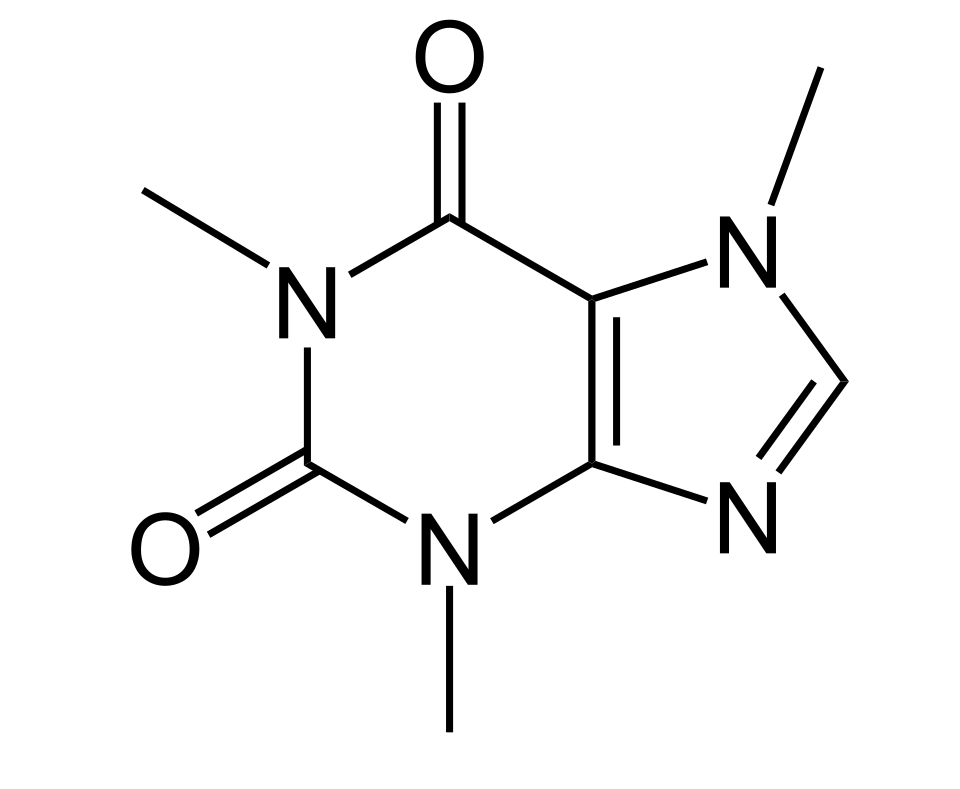

카페인 (Caffeine)
검수 완료

쉽게 풀면
카페인은 커피콩, 찻잎, 카카오 등에 자연적으로 들어있는 흰색 결정성 가루로, 퓨린 계열의 알칼로이드에 속한다. 물과 유기용매 모두에 어느 정도 녹으며, 가열하면 액체 상태를 거치지 않고 바로 기체로 변하는 승화 성질을 가져 이 성질을 이용한 정제 실험에 자주 등장한다. 순수한 형태로는 쓴맛이 나는 것으로 알려져 있으며, 신경계를 자극하는 각성 효과로 잘 알려진 물질이다.
왜 중요한가
카페인은 구조가 명확하고 순도 높은 표준품을 구하기 쉬워 추출 기법(액체-액체 추출, 초임계 추출 등)을 배우는 실험이나 크로마토그래피·분광법의 정량 분석 표준물질로 자주 사용된다. 또한 식품·의약품 중 카페인 함량 분석은 품질관리와 소비자 안전 연구에서 중요한 주제이다. 아데노신 수용체를 차단하는 방식으로 각성 효과를 낸다고 알려져 있어, 신경생리학에서 수용체-리간드 상호작용을 설명하는 대표 사례 물질로도 자주 인용된다. 식음료 산업에서는 탈카페인 공정 개발과 품질관리 분석의 핵심 대상이기도 하다.
무엇이고 어디서 작용하나
- 카페인은 메틸잔틴 계열의 중추신경 흥분제이다. 쓴맛이 나는 흰색 결정성 퓨린, 곧 메틸잔틴 알칼로이드이며 DNA와 RNA의 염기인 아데닌, 구아닌과 화학적으로 관련된다.
- 아프리카, 동아시아, 남아메리카가 원산인 여러 식물의 씨, 열매, 견과, 잎에 들어 있다. 사람이 가장 흔히 섭취하는 공급원은 차나무 잎과 커피 씨앗이다.
- 순수한 무수 카페인은 쓴맛이 나는 흰색 무취 가루이며 녹는점이 235~238도이다. 물에는 실온에서 100mL당 2g, 끓는 물에서는 66g이 녹고, 에탄올에는 100mL당 1.5g 녹는다. 약염기성(짝산의 pKa 약 0.6)이라 양성자화하려면 강산이 필요하다. 입체 중심이 없는 비키랄 분자이다.
- 물과 지질에 모두 녹아 혈액-뇌 장벽을 쉽게 통과한다.
주요 기능과 기전
- 주된 작용은 아데노신 수용체의 비선택적 경쟁적 길항이다. 카페인은 아데노신과 입체 구조가 비슷해서 수용체에 붙되 활성화하지 않는다. 깨어 있는 시간이 이어지면 신경 시냅스에 아데노신이 쌓여 졸음을 늘리는데, 카페인이 이를 막아 졸음을 막거나 줄인다.
- 각성 효과는 아데노신 A2A 수용체 길항과 관련된다. 복외측 시각교차앞구역(VLPO)에서 A2A 수용체를 막으면 결절유두핵으로 가는 억제성 GABA 신경전달이 줄어, 각성을 촉진하는 히스타민 신경핵이 탈억제된다.
- 그 밖에 포스포디에스테라아제 억제제로 세포 내 cAMP를 올리고, 리아노딘 수용체의 활성제이며, 아세틸콜린 분해효소를 약하게 억제한다.
- 건강한 성인에서 반감기는 3~7시간이다. 남성 흡연자에서 30~50% 짧아지고, 경구피임약을 쓰는 여성에서는 약 2배로 길어진다. 임신 후반기에는 최대 15시간까지 늘고 신생아에서는 80시간 이상일 수 있다.
연구에서 다루는 방식
- 합성은 피셔가 1895년에 1,3-디메틸요소와 말론산에서 시작해 N,N'-디메틸바르비투르산을 거쳐 한 첫 합성이 있고, 산업적으로는 요소와 클로로아세트산에서 합성한다.
- 추출은 커피 탈카페인 공정에서 쓰는 방법이 대표적이다. 물 추출(활성탄으로 카페인 제거), 초임계 이산화탄소 추출(31.1도, 73기압 이상에서 비극성 용매로 작용), 유기 용매 추출(에틸 아세테이트 등)이 있다. 물 기반 공정과 초임계 이산화탄소 추출은 휘발성 향 성분을 더 보존하는 선택적 방법이다.
- 안전 기준 자료로, 유럽식품안전청은 비임신 성인에게 하루 400mg(체중 kg당 약 5.7mg)까지는 안전상 우려가 없다고 보고했다. 치사량은 하루 10g을 넘는다. 쥐의 LD50은 체중 kg당 192mg이다.
- 실험실에서는 시료와 표준 용액의 농도, 용매, 순도를 밝혀 쓴다. 세포 실험이나 동물 실험의 용량은 사람의 섭취량과 직접 비교하지 않고 체중 기준 용량으로 환산해 해석한다.
논문에서는 이렇게 쓰입니다
실제 논문에서
국내 학술지 논문에서 이 용어가 쓰인 문장을 그대로 옮겼다. 제목·학술지·연도와 원문 링크를 함께 적었다.
“밀싹과 보리싹은 커피에 일부 혼합하여 사용 시 커피의 카페인 함량을 줄이고 싹이 지닌 생리활성성분을 보완하여 커피 대체재로 유용하게 쓰일 수 있을 것으로 판단되었다.”
밀싹과 보리싹을 혼합한 커피 추출액의 이화학적 특성 및 생리활성성분, 한국식품영양과학회지, 2023 · KCI 한국학술지인용색인 · 원문 보기 ↗
“최적화된 시험법을 마련 하기 위해 기기분석 및 전처리 조건을 비교·분석하여 클 로로겐산과 카페인을 30% 메탄올 추출하여 인산용액과 인산 함유 아세토니트릴으로 액체크로마토그래프를 통해 330 nm, 280 nm에서 분석하도록 시험법을 설정하였다.”
HPLC-UVD를 이용한 건강기능식품에서 클로로겐산과 카페인 동시분석법 최적화 및 적용성 검증, 한국식품위생안전성학회지, 2024 · KCI 한국학술지인용색인 · 원문 보기 ↗
예시 문장
아래 예문은 용어의 쓰임을 보이려고 만든 것으로, 실제 논문 문장이 아니다.
커피 속 카페인 양을 정확히 측정했다는 뜻이다.
가열해 기체로 만들었다가 다시 굳혀서 순수한 카페인을 얻었다는 의미이다.
조금 더 깊게 보면
카페인은 자외선 영역에서 특징적인 흡광 스펙트럼을 보여 자외-가시광 분광법으로도 정량이 가능하며, 크로마토그래피에서는 극성이 뚜렷해 다른 성분과 분리가 비교적 용이한 편이다. 승화 정제 시에는 온도를 너무 급격히 올리면 분해될 수 있어 서서히 가열하는 것이 일반적이다.
주의할 점
순수 카페인 분말은 소량으로도 생리 활성이 강하므로 흡입이나 피부 접촉을 피하고 정확한 저울로 소량씩 계량해 다뤄야 한다. 같은 메틸잔틴 계열인 테오브로민·테오필린과 화학구조가 매우 비슷해, 순도 확인 없이 융점만으로 동일 물질이라 단정하면 오판할 수 있어 분광 데이터를 함께 대조하는 것이 안전하다.
참고 문헌
- Wikipedia contributors. (n.d.). Caffeine. Wikipedia.
- Wikipedia contributors. (n.d.). Decaffeination. Wikipedia.